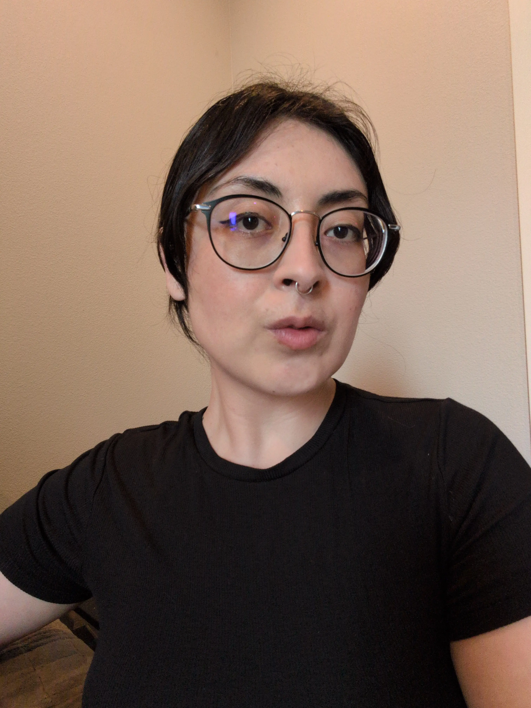

Hello! My name is Karla and this is where you'll find my work for DES342 Interactive Media II and what inspires me. I'm a Senior at PSU in the Art & Design program and enjoy digital illustration, typography, and web design/development.
